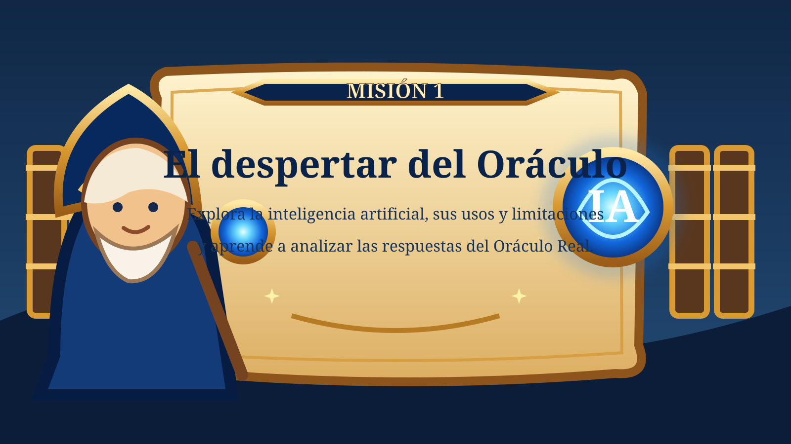
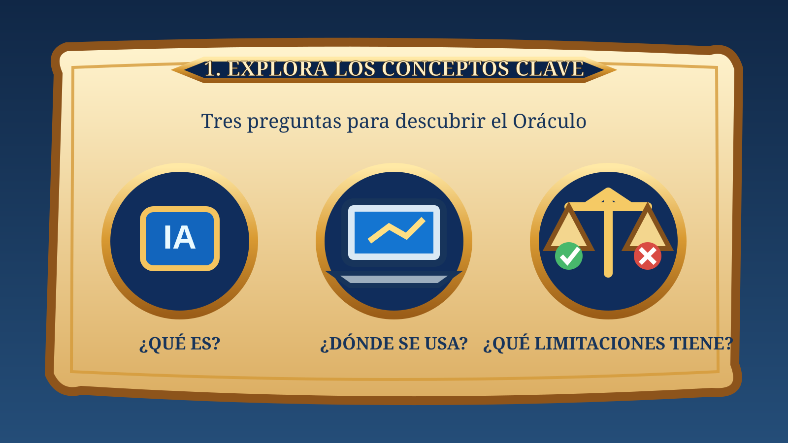
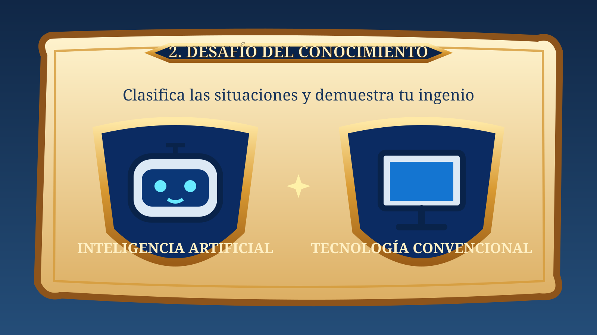
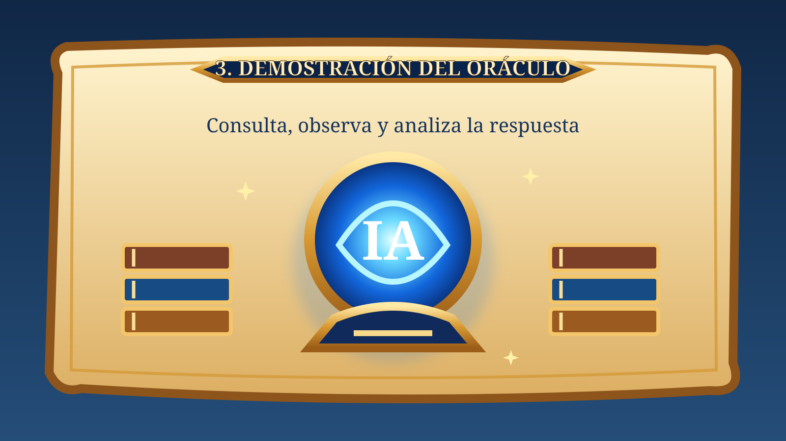
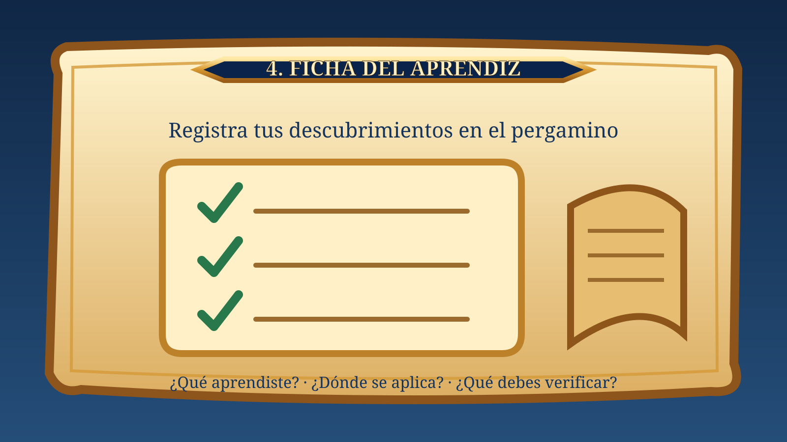
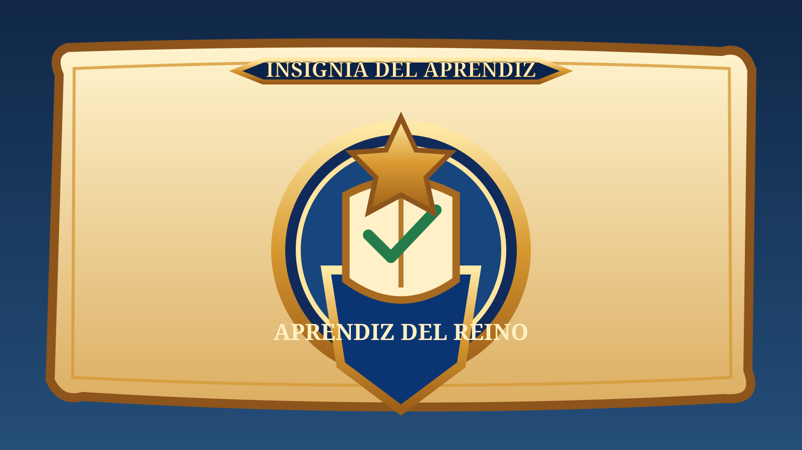

1. Un asistente virtual interpreta una pregunta hablada y genera una respuesta.

Aprendiz, la Gran Biblioteca ha perdido parte de sus conocimientos. El Consejo Real te encomienda una primera tarea: descubrir qué es la inteligencia artificial, reconocer dónde se utiliza y comprender por qué sus respuestas deben analizarse con criterio.
En esta misión conocerás al Oráculo Real, una representación de la inteligencia artificial. Mediante ejemplos preparados y una demostración guiada por tu docente, resolverás los desafíos de manera individual y registrarás tus descubrimientos en la ficha del aprendiz.
Al completar esta misión, podrás identificar qué es la inteligencia artificial, reconocer aplicaciones cotidianas y explicar al menos una de sus limitaciones.

Idea clave: no toda tecnología digital utiliza inteligencia artificial. Algunas herramientas solo siguen instrucciones fijas y previamente programadas.

Lee cada situación y selecciona la opción que consideres correcta. Recibirás una explicación después de responder. Completa las ocho situaciones.
1. Un asistente virtual interpreta una pregunta hablada y genera una respuesta.
2. Una calculadora básica suma dos números cuando el usuario introduce la operación.
3. Una plataforma recomienda películas según el historial y las preferencias de visualización.
4. Un reloj programado hace sonar una alarma todos los días a las 6:30 a. m.
5. Una herramienta crea una imagen nueva a partir de una descripción escrita por el usuario.
6. Un semáforo cambia de luz siguiendo siempre el mismo ciclo de tiempo programado.
7. Un filtro de correo analiza patrones para identificar mensajes que podrían ser correo no deseado.
8. Una presentación avanza a la diapositiva siguiente cuando el usuario pulsa una tecla.

¿Qué es la inteligencia artificial y para qué puede servir?
La inteligencia artificial reúne tecnologías que permiten a los sistemas informáticos realizar tareas como reconocer patrones, interpretar lenguaje, hacer recomendaciones o generar contenido. Puede ayudar a estudiar, organizar información y crear materiales. Sin embargo, puede equivocarse o presentar datos incompletos, por lo que sus respuestas deben revisarse y contrastarse.
Importante: esta es una respuesta didáctica preparada para la misión, no una conversación en directo con una herramienta de IA. El docente puede realizar una demostración adicional desde su propio equipo.
Antes de aceptar una respuesta del Oráculo, pregúntate:
Completa esta ficha con tus propias palabras. No copies literalmente la respuesta del Oráculo.

Misión 1 · El despertar del Oráculo
Revisa tus respuestas antes de imprimir o entregar la ficha. No incluyas contraseñas, direcciones ni otros datos personales.
Has completado el primer recorrido para recuperar los saberes del reino. Entrega tu ficha al docente para recibir retroalimentación y, cuando valide tu evidencia, obtener la insignia correspondiente.

Se concede al identificar conceptos básicos de IA, reconocer aplicaciones y explicar una limitación.
Fragmento recuperado: CONOCIMIENTO. Este fragmento permitirá avanzar hacia la segunda misión: «El lenguaje de los sabios».